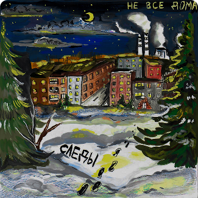
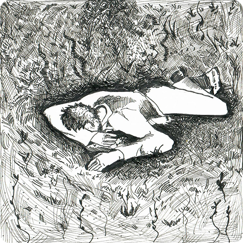
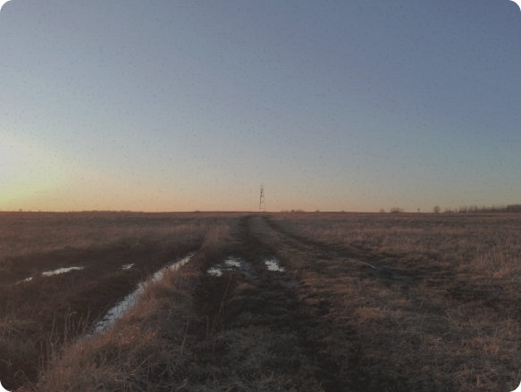
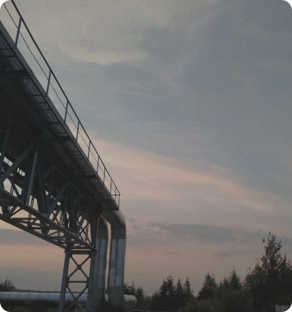
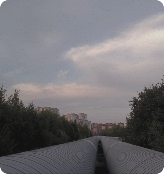
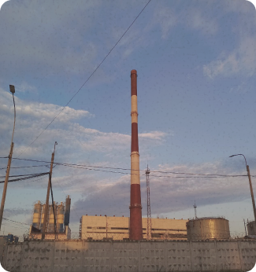
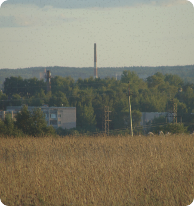
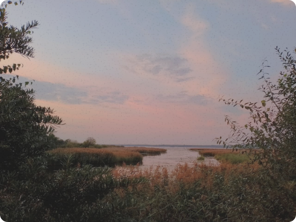
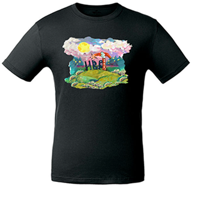
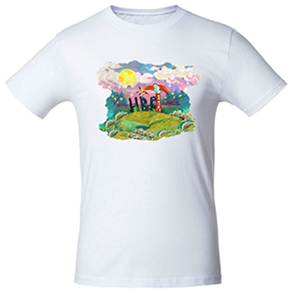

Не все дома
Музыка весенних полей, теплых труб
и холодной осени

Новый альбом
Местоимение
2026
Альбом «Местоимение» — это история
о побеге из холодной повседневности
в тепло летнего дня на лёгком ветру.
Треки
Прослушайте отрывки из наших композиций. Каждая песня — это история о поиске себя между городом и мечтой.
О музыке
Мы пишем о том, что чувствуем каждый день: тревога больших городов, стены из бетона, метро без выхода, дым сигарет на мостах. Но также — о побеге.
О море внутри, о траве под босыми ногами, о закатах в окне поезда, о ветре, который уносит всё лишнее.
Наша музыка — это контраст. Холод и тепло. Город и природа. Тревога и свобода. Мы ищем баланс между тем, кто мы есть, и тем, кем хотим стать.
«Не все дома» — это не про отсутствие. Это про поиск.


Строки
Фрагменты текстов, которые определяют нашу музыку
“Но не заменить тепло рук
системами труб, давлением труб” — Теплоэнергетика и теплотехника(2024) “Нас будут вспоминать молчаливые стены” — Звездный дождь(2023) “Пусть впереди еще целая жизнь,
постараться её нужно прожить” — Теплоэнергетика и теплотехника(2024) “Тревожные мысли на фоне голых стен” — Обнимать и утешать(2023)
системами труб, давлением труб” — Теплоэнергетика и теплотехника(2024) “Нас будут вспоминать молчаливые стены” — Звездный дождь(2023) “Пусть впереди еще целая жизнь,
постараться её нужно прожить” — Теплоэнергетика и теплотехника(2024) “Тревожные мысли на фоне голых стен” — Обнимать и утешать(2023)
Визуальный дневник
Моменты между городом и свободой






Философия группы
Наш музыкальный проект — это, в первую очередь, деятельность, позволяющая нам выражать свои мысли и чувства, отдушина, в которой мы можем раскрыть свои мечты и переживания, отразив их в музыке.
При написании песен мы избегаем таких тем, как политика и социальные явления, и концентрируемся на своих эмоциях, борьбе с самим собой, на психологическом восприятии жизни и личных отношениях между людьми.
Каждый может увидеть в нашем творчестве частичку себя и своих мыслей, поэтому эти песни всегда найдут своих слушателей.
Мы сами пытаемся понять что для нас значит «Не все дома»
Мерч
Фрагменты текстов, которые определяют нашу музыку

Черная футболка “НВД”
2 500 ₽
Заказать
Белая футболка “НВД”
2 500 ₽
Заказать
CD/RW “Местоимение”
700 ₽
Заказать